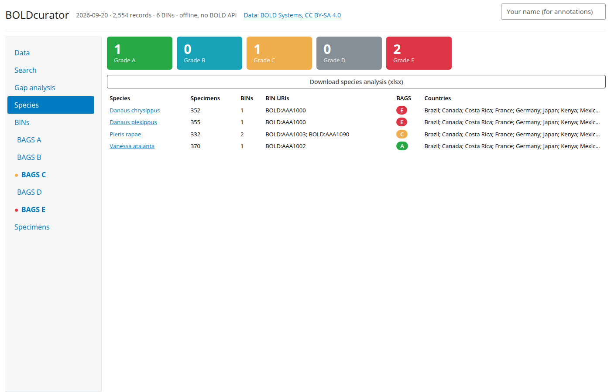
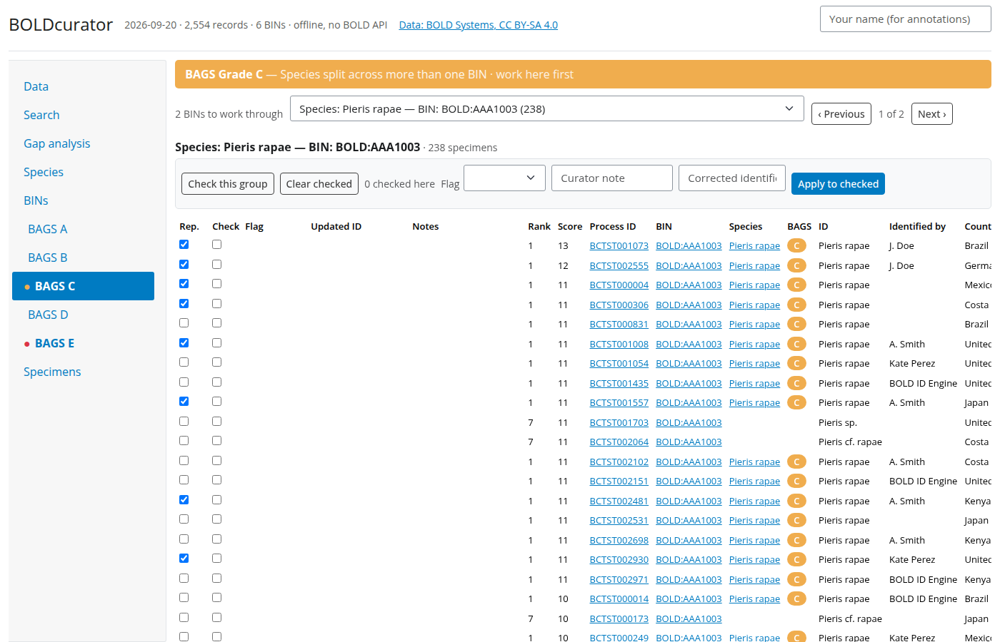

Curate BOLD specimen data, offline.
BOLDcurator matches your taxa, countries, datasets and projects against a local snapshot of BOLD's public data package, grades every species with BAGS, and helps you pick clean, representative barcode records — no BOLD API key, no internet connection needed once you have a snapshot.

Download
Pick your operating system. All builds are free and open source (MIT licence) — see the FAQ below if your OS warns you about an unsigned app on first run.
64-bit Windows 10 or 11. The installer adds a Start Menu entry and an uninstaller.
Download installer (.exe) or the portable .zip (no install)M1/M2/M3/M4 Macs, macOS 11 (Big Sur) or newer. Unzip and move BOLDcurator to Applications.
Download .zipOlder, Intel-based Macs (pre-2020), macOS 11 (Big Sur) or newer. Unzip and move BOLDcurator to Applications.
Download .zipPrefer not to install anything? A hosted web version is also available — see "Is there a version I don't need to install?" in the FAQ. Every release is listed on the GitHub Releases page, including past versions and full changelogs.
Getting started
From opening the app for the first time to your first curated export.
-
Download and open the app Pick your OS above. On first launch, Windows/macOS may warn that the app is from an unrecognised developer — see the FAQ for how to proceed; it's a one-time prompt.
-
Get a BOLD snapshot The first-run screen offers a one-click "Download the latest public BOLD snapshot" button, or you can point it at a snapshot file you already have (a colleague's copy, a shared drive).
-
Search On the Search tab, type the taxa, countries, dataset codes or project codes you want, then click Search. "Check size" first if you're not sure how big the result will be.
-
Curate Work through the Species, BINs and BAGS grade tabs (grades E and C first — that's where the barcode and the identification disagree). Flag records, correct identifications, and confirm representative specimens.
-
Export Download curated records as TSV, FASTA or an annotated xlsx report from the Specimens, Species, BINs or Gap analysis tabs.
What it does
A desktop rewrite of the original BOLDcuratoR Shiny app, built to work against a local copy of BOLD's data instead of BOLD's live API.
Works offline
No BOLD API key, no live network calls once you have a snapshot — everything runs against your own local copy of the public data package.
BAGS grading
Every species graded A–E per the BAGS system, with grades E and C (where the barcode and the name disagree) surfaced first.
BIN & gap analysis
See BIN concordance at a glance, and check which of the taxa you typed were actually found in the result.
Representative selection
Auto-selects a best specimen per BIN × country, which you can review and override before exporting.
Flags, notes & corrections
Flag records, add curator notes, and record corrected identifications — all carried through into every export.
Sessions
Save and resume a search, with auto-save every minute, so a large curation job never has to be finished in one sitting.

BAGS Grade C — a species split across more than one BIN, worked one problem at a time.
FAQ
Do I need a BOLD API key or an internet connection?
Windows says "Windows protected your PC" / macOS says the app is from an "unidentified developer" — is it safe?
.so or .dylib), you
have an older download — get the latest version above,
which asks just once.
Downloading the snapshot fails with "CERTIFICATE_VERIFY_FAILED"
.duckdb.gz file to
unpack it, then choose "I already have a snapshot file" in the
app and point it at the .duckdb file.
Where do my downloads (TSV, FASTA, xlsx) go?
Where is the BOLD snapshot stored, and how do I update it?
.boldcurator folder in your user/home
directory, never inside the installed app itself. Use the
"Snapshot file" panel on the app's Data tab to see which file
is in use, download a newer public snapshot, or point at a
different file — a new download lands alongside the one you're
using, and the app tells you when a restart is needed to
switch to it.
Where are my saved sessions, and what would I lose them?
.boldcurator folder, and auto-save every minute
under whatever name you give the session (or "Auto-save" if
you leave it blank). Deleting that file, or deleting a
specific session from the Data tab, is the only way to lose
one — closing the app does not.